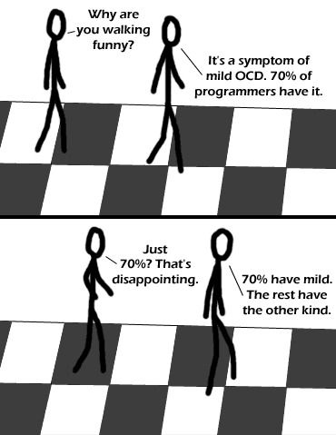

Comic JK 121
When I Feel Like It
⇤
<
?
>
⇥

⇤
<
?
>
⇥
Forum
.
RSS
.
Digg
.
Facebook
.
Reddit
.
Twitter
.
Stumbleupon
I only step on squares approved by your mother. Is it bad that it bothers me that he's walking on the light squares instead of the dark? this is supreme fleet admiral yuri! Hi yuri. How's MIT treating you? As an active member of the neurodiversity movement, I love this one. By the way, in case you're wondering why Cooper Union's neurodiversity group (of which I am president,) has yet to have an event relating to OCD, know that I tried reaching out to Cooper Union's OCD facebook group and received no reply. I do not believe it to be my place to decide what people with OCD want the world to think of them, but if anyone with the condition voices an opinion, SPIN is there to amplify your voice. O_O xkcd reference for teh win. I really like the alt text for this one, but I have a feeling on longer hallways I am going to begin to struggle a bit. "Hold on, I can't walk any further, I have to look up digits of pi." The fa$ebuck group only answers messages that begin "Hello, hello, hello"